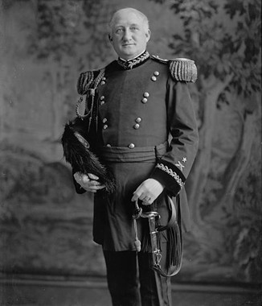
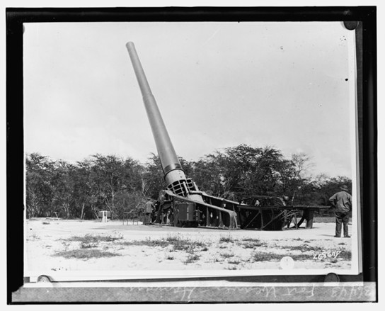

Fort Weaver Road

Fort Weaver Road takes its name from Fort Weaver, a coastal defense installation established in 1899 along the ʻEwa shoreline, near what is now Kapilina Beach Homes. The fort was part of a late-19th- and early-20th-century network of U.S. Army coastal defenses designed to protect the approaches to Pearl Harbor as Hawaiʻi’s strategic importance grew.
In 1922, the installation was renamed Fort Weaver in honor of General Erasmus Morgan Weaver Jr., the first Chief of the U.S. Army Coast Artillery Corps. Weaver himself never served in Hawaiʻi. The naming reflected a common military practice of the era, honoring senior officers whose policies and organizational leadership shaped national defense strategy across U.S. territories rather than commemorating local service.

The fort’s most active moment came during World War II. On December 7, 1941, Marines stationed at Fort Weaver manned three batteries of .50-caliber anti-aircraft machine guns. They engaged Japanese aircraft, and several enemy planes were reportedly downed by its batteries. The fort was part of the wider defensive response unfolding across the island that morning.
Fort Weaver remained in military use through 1948. After a brief period of inactivity, the area transitioned in the 1950s into military housing. Over time, the physical structures of the fort disappeared entirely. Today, no visible remnants of the gun batteries or installations remain along the shoreline.
The road that bears the fort’s name developed gradually alongside this growth. Fort Weaver Road was expanded and realigned through the mid-to-late 20th century, with its modern form completed in 1982 to accommodate the capacity of a growing community in the transitioning ʻEwa plains.
Unlike many place names tied to people who lived locally or events rooted in Hawaiian tradition or local culture, Fort Weaver Road preserves a layered military history that is easy to overlook. Most drivers experience it simply as a commute corridor, counting traffic lights on the way to the freeway.

Despite this, the name endures. Long after the fort vanished and the land changed use, Fort Weaver Road continues to carry forward a reminder of a time when Oʻahu’s coastline was shaped as much by global conflict and strategic security.